한국잡월드
HD현대 산업 직무 체험 콘텐츠 3종 UX/UI 디자인
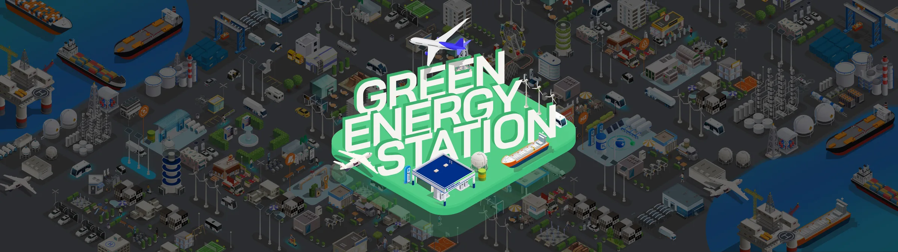
세 개의 산업을
직접 해 보는 직업으로
한국잡월드 어린이·청소년 체험관에 새로 설치된 HD현대 계열 3개사의 직무 체험 콘텐츠입니다.
어린이는 자율주행 지게차를 점검하고, 청소년은 친환경 선박을 설계하거나 친환경 에너지 도시를 만듭니다.
모두 함께 보는 큰 화면과 각자 조작하는 개인 패드로 이루어져 있어,
두 화면이 하나의 체험으로 이어지도록 디자인했습니다.
HD현대 · HD현대사이트솔루션 · HD한국조선해양 · HD현대오일뱅크
어린이 체험관(자율주행 지게차) · 청소년 체험관(친환경 선박 연구소, 그린에너지 스테이션)
벽면 화면과 개인 패드 · 미디어 테이블과 개인 패드
디자인 100%
같은 산업 체험도
연령과 화면에 맞게 나눴습니다.
어린이와 청소년이 같은 산업을 체험하더라도 이해할 수 있는 정보의 양이 다르고, 큰 화면과 개인 패드가 맡는 역할도 달랐습니다.
연령에 맞춘 정보의 양
어린이 체험관은 노란색을 주색으로 쓰고, 포크와 센서를 점검하는 단순한 미션으로 구성했습니다. 청소년 체험관은 선박 종류와 엔진, 연료 공정처럼 실제 산업 용어와 선택지를 화면에 담았습니다.
함께 보는 화면, 혼자 조작하는 패드
벽면 화면과 미디어 테이블은 여러 명이 함께 보는 공간으로, 개인 패드는 각자 설정하고 미션을 수행하는 조작판으로 역할을 나눠 디자인했습니다.
화면 밖으로 이어지는 결과
친환경 선박 연구소에서는 미션으로 모은 선박 조각으로 모형을 완성해 미디어 테이블에 올리면, 화면 속 바다에서 선박이 출항합니다.
자율주행 지게차 어린이 체험관
HD현대사이트솔루션의 자율주행 지게차를 체험하는 콘텐츠입니다. 큰 화면에서는 창고 안을 움직이는 지게차를 보고, 개인 패드로 지게차를 설정하고 움직입니다. 어린이의 호기심을 끌도록 노란색을 주색으로 디자인했고, 창고와 지게차는 아이소메트릭 그래픽으로 표현했습니다.
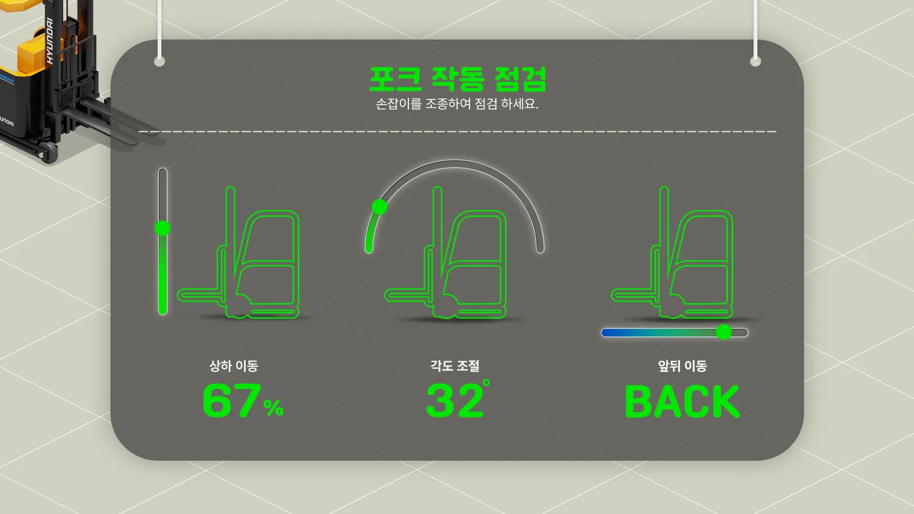
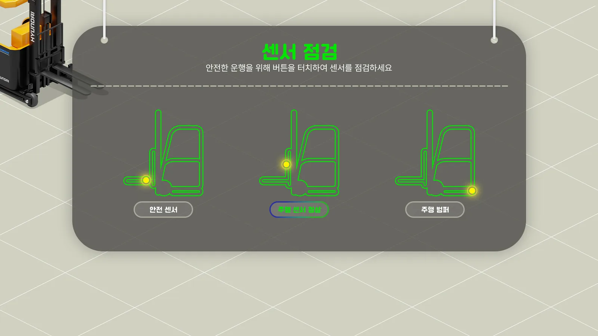
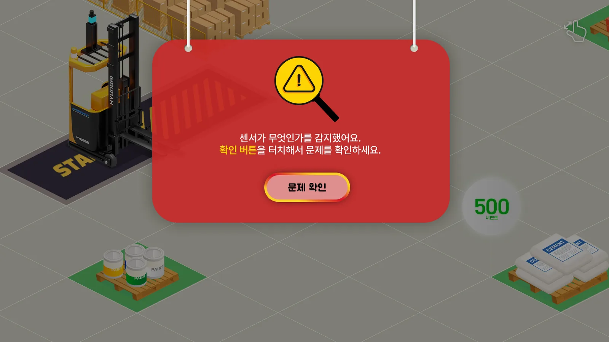
친환경 선박 연구소 청소년 체험관
HD한국조선해양의 선박 설계와 제작 과정을 체험하는 콘텐츠입니다. 선주에게서 선박 의뢰 편지를 받고, 개인 패드에서 미션을 수행하며 선박 종류와 선수 형태, 엔진을 고릅니다. 미션으로 모은 선박 조각으로 모형을 완성해 미디어 테이블에 올리면 선박이 출항합니다.
그린에너지 스테이션 청소년 체험관
HD현대오일뱅크의 친환경 에너지를 체험하는 콘텐츠입니다. 미디어 테이블 위의 넓은 도시 지도에서 에너지 시설을 하나씩 세우고, 개인 패드에서 바이오 연료 같은 에너지원의 생산 공정을 미션으로 풀어 봅니다.
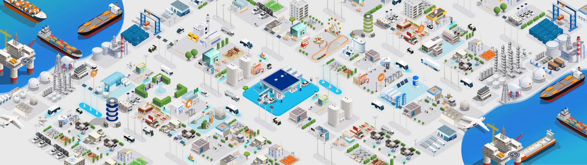
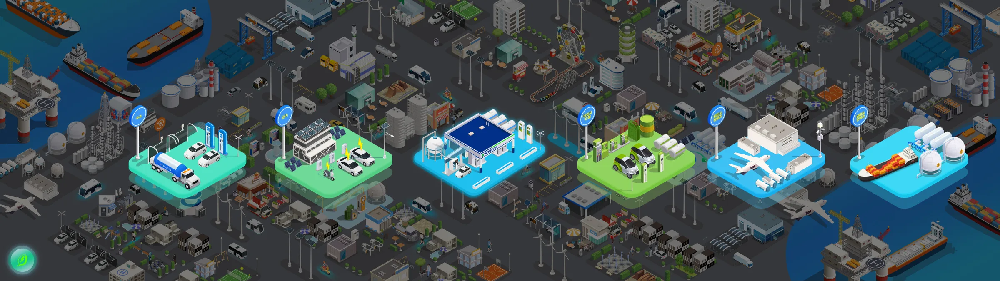
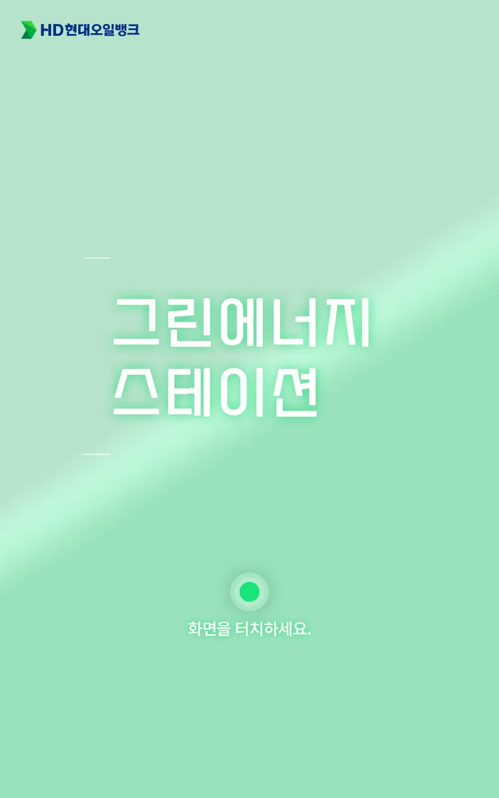
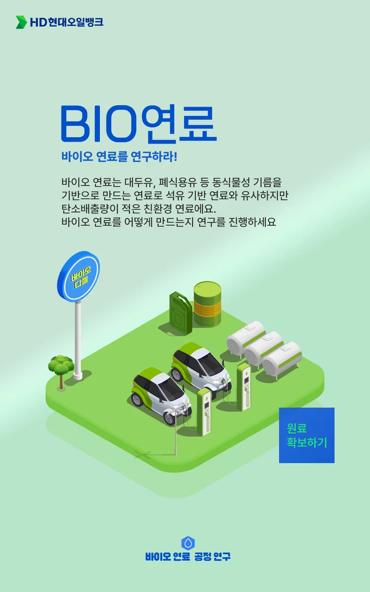
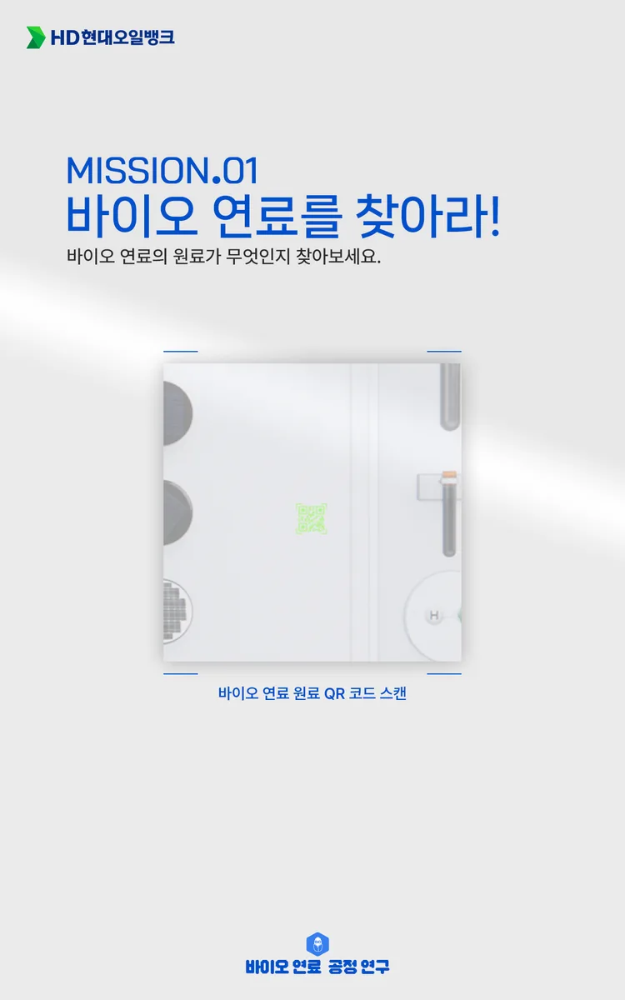
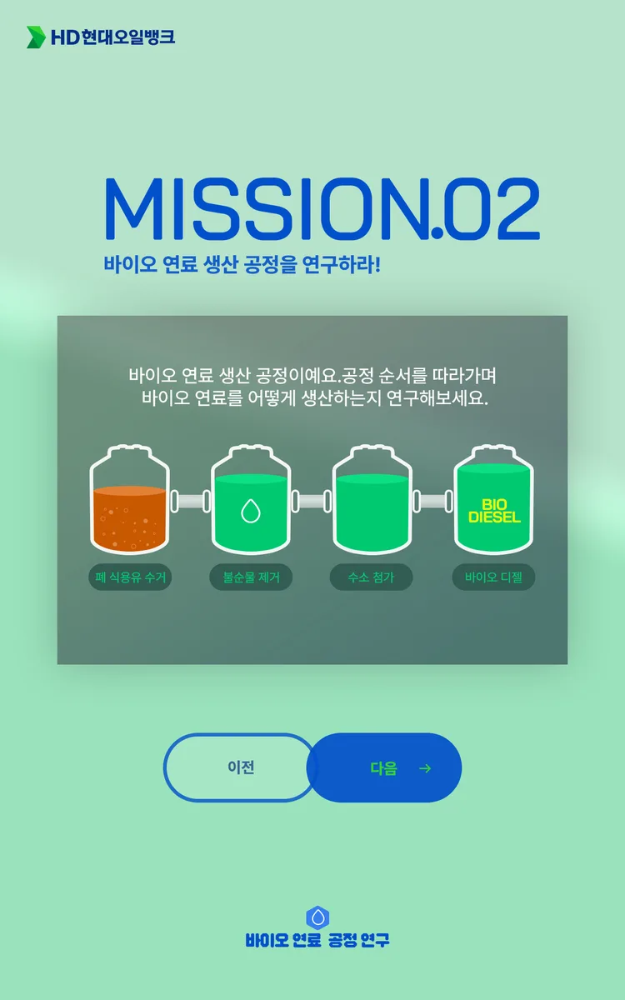
현장
한국잡월드 어린이·청소년 체험관에 설치된 모습과 소개 영상입니다.
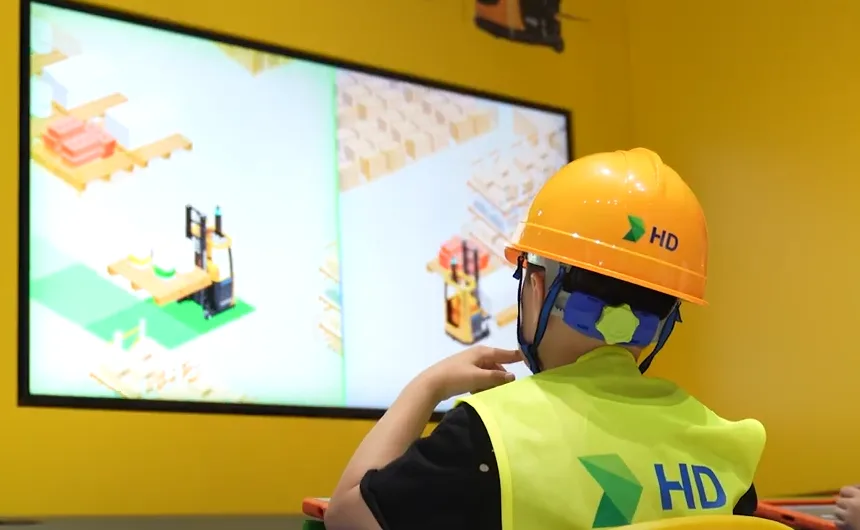
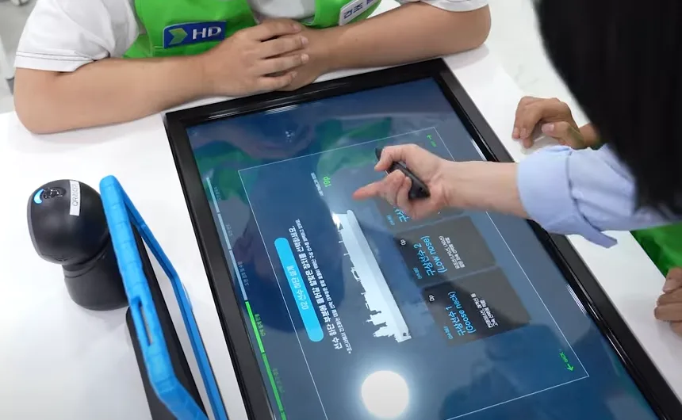
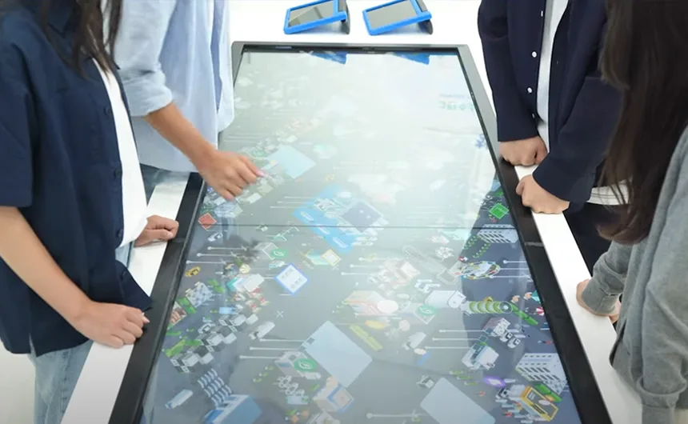
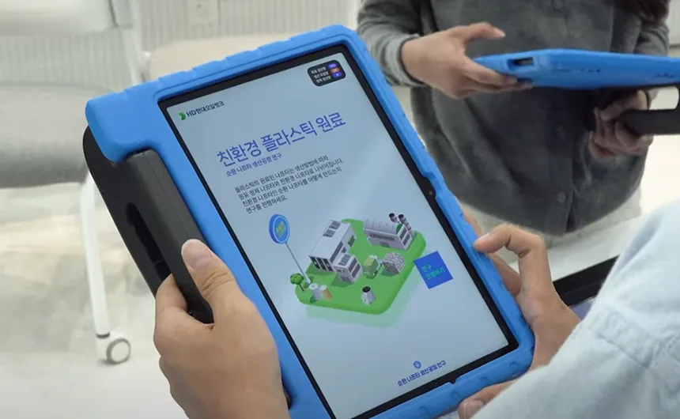
세 체험의 화면을
모두 디자인했습니다.
HD현대가 기획한 세 체험 콘텐츠의 큰 화면과 개인 패드 UX/UI, 그래픽을 디자인했습니다. 화면에 등장하는 안내 캐릭터는 한국잡월드의 공식 캐릭터입니다.
디자인 100% · 큰 화면과 패드 UX/UI, 아이소메트릭 그래픽